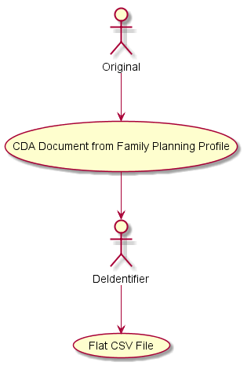

De-Identification Handbook
2.0.0-comment - ballot

De-Identification Handbook
2.0.0-comment - ballot

This page is part of the De-Identification Handbook (v2.0.0-comment: Publication Ballot 1) based on FHIR (HL7® FHIR® Standard) R4. This is the current published version in its permanent home (it will always be available at this URL). For a full list of available versions, see the Directory of published versions
This section, the IHE IT Infrastructure (ITI) Analysis of Optimal De-Identification for Family Planning Data Elements, demonstrates the application of the IHE De-Identification Handbook's systematic process framework. It describes the comprehensive de-identification analysis performed by the ITI Technical Committee for the Family Planning Annual Report (FPAR) use case published in the IHE Quality, Research, and Public Health (QRPH) Family Planning version 2 (FPv2) Trial Implementation Supplement, Rev. 1.4 (December 29, 2021).
This document serves as both a practical demonstration of the de-identification process framework and a complete de-identification profile for Family Planning data in the Title X FPAR use case. As described in the IHE Profile Development Guidance, a de-identification profile specifies the source data type and defines how each data element will be removed, modified, or preserved during de-identification.
This de-identification profile demonstrates:
As a de-identification profile, this document fulfills the requirements outlined in IHE Profile Development Guidance by:
The detailed design questions that guide technique selection are organized by attribute type in the Project and Data Details subsection under De-identification Goals.
This implementation guide serves three primary audiences:
Software Developers and Implementers: Those who will implement the de-identification techniques into their software systems. This de-identification profile serves as the specification for what transformations to apply to each data element. Developers should use the IHE QRPH Family Planning version 2 (FPv2) supplement for source document structure, this profile for de-identification specifications, and the Techniques chapter for implementation techniques.
Privacy and Security Professionals: Those responsible for designing, validating, and governing de-identification processes. This document demonstrates the application of the systematic Process framework, including context analysis, risk assessment, and mitigation design. It serves as a template for other de-identification projects.
Clinicians, Researchers, and Data Analysts: Those who seek to understand how and why specific de-identification techniques were selected for each data element, and how the resulting dataset maintains utility for public health reporting while protecting patient privacy. This audience will benefit from understanding the Data Types classification and the Concepts of identifiability levels.
This section analyzes the environment in which Family Planning data is collected, processed, and shared, following the framework established in the Process chapter.
The intended use of the de-identified data determines the extent of de-identification and acceptable risk levels. The primary purpose for collecting Family Planning data is:
Primary Purpose: To support the U.S. Office of Population Affairs (OPA) Title X Family Planning Annual Reports (FPAR) for:
Scope Constraints: The de-identified dataset is specifically designed for public health reporting and program evaluation. It is not intended to support:
The de-identified FPAR data will be accessed by the following categories of recipients:
Organizational Recipients:
Recipient Profiles:
Relationship to Data Custodian: The data flows from service sites to sub-recipients to grantees to OPA, creating a hierarchical reporting structure. All recipients operate under Title X grant agreements with confidentiality obligations.
Background Knowledge Assessment: Recipients have varying levels of background knowledge:
The de-identification architecture for Family Planning data follows a centralized model to ensure consistency and apply specialized expertise:
Original Data Source: Family Planning CDA documents generated at approximately 4,100 service sites that provide family planning and related preventive health services
De-identification Architecture: Based on public comment feedback, a single, centralized de-identification intermediary was selected over multiple distributed de-identification points. This decision was driven by:
Data Transformation Process: The de-identification process follows format-specific best practices by maintaining de-identified data in native clinical document formats (CDA or FHIR) throughout the de-identification stages, with CSV serving as a derivative format for FPAR reporting:
nullFlavor="MSK" for masked elements, FHIR DataAbsentReason extension for removed data)
Data Flow Diagram: The complete data flow in the Title X FPAR use case is illustrated in the figure below. The diagram reflects a multi-stage de-identification process, where Family Planning CDA documents move from service sites through preliminary de-identification (Stage 1), then through a centralized advanced de-identification intermediary (Stage 2), before reaching final recipients. Each stage applies distinct privacy-preserving transformations, as described in the text above.

Important Note: External submissions use Family Planning CDA documents only. Internal processing may maintain de-identified CDA or FHIR representations. Other document types submitted via similar workflows are out of scope for this analysis.
Applicable Regulations:
Data Sensitivity: Family Planning data involves sensitive reproductive health information requiring enhanced privacy protection for a potentially vulnerable patient population.
This section provides a comprehensive evaluation of the Family Planning data following the assessment framework in the Process chapter.
Population: Individuals receiving family planning services at Title X-funded clinics
Key Characteristics:
Structured Data (Primary format): Family Planning CDA documents containing:
Free Text: Limited presence; requires NLP-based identifier scrubbing
Format: CDA/XML requiring XML parsing capabilities for de-identification processing
Following the Data Types framework:
Direct Identifiers: Patient Name (excluded from FPAR), Facility Name (transformed to ID), Provider Name (transformed to ID)
Quasi-Identifiers: Date of Birth/Age, Visit Date, Sex, Race, Ethnicity, ZIP Code, Language, Pregnancy History, Income, Insurance Status
Sensitive Attributes: Services Received, Clinical Procedures, Pregnancy Outcomes, STI Test Results
Sharing Model: Controlled Public Sharing (Data Use Agreement)
Attack Types: Identity attacks (journalist risk), attribute attacks on small groups, membership attacks
Privacy Model: k-anonymity (provides measurable, interpretable guarantees for quasi-identifier linkage attacks)
This analysis uses core terminology defined in the Concepts chapter, including de-identification, pseudonymization, anonymization, and identifiability levels. For complete definitions, refer to that chapter.
Domain-Specific Terms:
This section establishes specific objectives for the FPAR de-identification process per the Process framework, balancing privacy protection with data utility.
Scope: U.S. Title X context; reporting purpose only (NOT general research); protects vulnerable reproductive health patients
Entity De-identification: Patients (primary), facilities and providers (secondary, to prevent indirect identification)
Data Fidelity: Maintain aggregate accuracy, preserve longitudinal relationships, support geographic analysis
Identifiability Target: Irreversibly Pseudonymized Data (Concepts) - stronger than reversible pseudonymization, practical for longitudinal utility
Risk Threshold: Average re-identification risk ≤ 0.05 (5%); k-anonymity with k ≥ 20 as working target
Rationale: Non-public controlled sharing + medium-high attack possibility + medium-high impact (sensitive data, vulnerable population) = conservative threshold needed
To select techniques per element, the following questions are applied by attribute type:
Direct Identifiers (DI)
Categorical Quasi-Identifiers (QI) (e.g., race, ethnicity, language, insurance)
Numerical Quasi-Identifiers (QI) (e.g., income, counts)
Temporal Quasi-Identifiers (e.g., DOB, visit date, time of day)
Geographic Quasi-Identifiers (e.g., ZIP, facility location)
Free Text / Sensitive Attributes
Iterative Review
Clinical/Public Health: Maintain FPAR performance measures, analytical utility for program evaluation
Privacy/Security: Protect vulnerable patients, minimize combinable quasi-identifiers, account for thousands of potential recipients
OPA requires the collection of family planning service delivery data in the form of the FPAR as a condition of its grant awards. The office uses the data for program planning and budgeting, monitoring program performance, clinical quality improvement, budget justification to Congress, and allocation of funding to address unmet need for family planning services in specific areas of the U.S. and its territories.
The IHE QRPH Family Planning version 2 (FPv2) supplement defines five use cases for family planning data collection and reporting:
All five use cases involve collection of family planning data from Title X grantees, sub-recipients, and service sites that provide a wide range of family planning and related preventive health services. The de-identification analysis in this document applies to all FPv2 use cases.
Important Scope Limitation: This analysis is specific to the Title X FPAR context in the United States. The conclusions regarding optimal de-identification techniques relate exclusively to this use case. Organizations wishing to utilize these data elements in other programs must conduct their own de-identification analysis, considering local needs and applicable legislation.
The identified data described in the FPv2 supplement is used for clinical purposes at the point of care. A de-identified data set is needed for reporting and performance measurement purposes. The de-identified data set is not intended to be suitable for general research purposes, as that would result in too broad and identifiable a data set. Data elements that may be useful for some research purposes may be redacted or segregated into separate reports to reduce risk to vulnerable patients.
For purposes of risk analysis and exposure of the de-identified data set, our assumptions include:
Data is collected by the up to 4,100 service sites that comprise the Title X network
Data is de-identified by a single, central de-identification third party
Data is submitted in a de-identified manner to OPA
De-identified data is made available to authorized staff from OPA headquarters and staff from OPA’s family planning service grantees and their subrecipient agencies
The risk posture of this data set is not the same as making the data publicly available; however, with potential access numbering in the thousands, securing this data set is a significant challenge that must be considered during the de-identification process.
Architectural Context: Since the FPAR data will have already been used to provide treatment and services to the patient at the point of care, the de-identified data is not needed for clinical purposes. The de-identified data supports program evaluation, performance measurement, and policy decisions for the Title X network.
From an architectural perspective, the FPAR use case depends on de-identification being performed prior to submission to the host organization. This means de-identification could be conducted by a third party intermediary performed at the source EHR. However, multiple points and levels of de-identification pose a risk to the accuracy and longitudinal consistency of the data and therefore after public comment feedback a single, centralized de-identification third party architecture was agreed upon.
This section constitutes the core of the de-identification profile for Family Planning data. As specified in IHE Profile Development Guidance, it provides detailed treatment specifications for each data element, identifying what will be removed, modified, or preserved. This element-by-element specification enables implementers to apply consistent de-identification across the Title X network while understanding the rationale for each decision.
Each element analysis follows a structured approach integrating concepts from the updated handbook:
Risk Contribution: Assessing how the element contributes to re-identification risk (particularly for quasi-identifiers)
Threat Analysis: Considering specific attack scenarios and background knowledge that could enable re-identification
The following subsections analyze each data element in the IHE QRPH Family Planning Profile. For each element, the analysis documents the decision process leading to the selected technique, balancing the clinical/analytical requirements against privacy protection needs.
Table 2.6-1: Element-level De-identification Rules
Note: Title terminology is preserved from the source white paper. In this profile, these “algorithms” correspond to selected de-identification techniques.
| Element | Patient Id type | De-Identification algorithm |
|---|---|---|
| Facility identifier | Indirect | Mapping table |
| Clinical Provider identifier | Indirect | Mapping table |
| Patient identifier | Direct | Mapping table |
| Visit Date | Indirect | Generalized to week of year plus indicator of visit order |
| Date of Birth | Indirect | Convert to age in years. For clients over 50, grouped and mapped to "over 50". |
| Administrative Sex | Indirect | For values of "Male" or "Female" forward the data unchanged. For Administrative Sex values of "other" change them to "Female" |
| Pregnancy History | Indirect | Redacted |
| Limited Language Proficiency | Indirect | Collapse all forms to Limited English Proficiency (LEP) TRUE or LEP FALSE. |
| Ethnicity | Indirect | Only the values "2186-5 Not Hispanic or Latino" or "2135-2 Hispanic or Latino" may be used. Any other input value must be converted to "2186-5 Not Hispanic or Latino". |
| Race | Indirect | Collapse to 5 OMB categories plus Other. For each county, establish which races are below the threshold of 50 people per county. For those races, group them into "Other" |
| Annual Household Income | Indirect | Convert to percentage of Federal Poverty Level (FPL) |
| Household Size | Data | Convert to percentage of Federal Poverty Level (FPL) |
| Visit Payer (U.S. Only) | Indirect | Convert to Public Health Information Network (PHIN) Vocabulary Access and Distribution System (VADS) |
| Current Pregnancy Status | Indirect | Generalize to YES/NO/UNKNOWN |
| Pregnancy Intention | Data | Unchanged |
| Sexual Activity | Data | Unchanged |
| Contraceptive Method at Intake | Data | Unchanged. |
| Reason for no contraceptive method | Data | Unchanged. |
| Contraceptive Method at Exit | Data | Unchanged. |
| Date of Last Pap test | Indirect | Redact the day of the month, and use Week and Year only in the format of yyyyWww where week 52 of 2014 would appear 2014W52 |
| HPV Co-test Ordered | Indirect | Redact the day of the month, and use Week and Year only in the format of yyyyWww where week 52 of 2014 would appear 2014W52 |
| CT Screen Ordered | Indirect | Redact the day of the month, and use Week and Year only in the format of yyyyWww where week 52 of 2014 would appear 2014W52 |
| GC Screen Ordered | Indirect | Redact the day of the month, and use Week and Year only in the format of yyyyWww where week 52 of 2014 would appear 2014W52 |
| HIV Screen Ordered | Indirect | Redact the day of the month, and use Week and Year only in the format of yyyyWww where week 52 of 2014 would appear 2014W52 |
| HIV Rapid Screen Result | Indirect | Delete. HIV reporting will be handled separately. |
| HIV Supplemental Result | Indirect | Delete. HIV reporting will be handled separately. |
| Referral Recommended Date | Indirect | Delete. HIV reporting will be handled separately. |
| Referral Visit Completed Date | Indirect | Delete HIV referrals. HIV reporting is required for the HHS HIV linkage to care performance measure, however HIV data is sensitive and the HIV pools sufficiently small that a separate mechanism will be established for reporting on these data, such as reporting these values to a separate aggregate database. For non-HIV referrals redact the day of the month and use Month and Year only |
| Systolic blood pressure | Data | Unchanged |
| Diastolic blood pressure | Data | Unchanged |
| Height | Indirect | Unchanged, except for values below 59 inches or above 76 inches. For values below 59 inches, convert to 59 inches. For values above 76 inches, convert to 76 inches |
| Weight | Indirect | Unchanged, except for values below 100 lbs. or above 299 lbs. For values below 100 lbs., convert to 100 lbs. For values above 299 lbs., convert to 299 lbs. |
| Smoking status | Indirect | Unchanged |
Utility Assessment: From a health services research perspective, the facility identifier is needed, at a minimum, to compare services or outcomes at the level of a small geographic region such as a county or township. When measuring outcomes or service provision, it may also be beneficial to compare different sites. Additionally, data contributors consuming this de-identified data set for their own planning purposes would need some way to distinguish outcomes or services provided across facilities. Some form of longitudinal consistency is needed for these purposes, so this data element cannot be deleted, and cannot be null.
The De-Identification spreadsheet1 that accompanied the De-Identification whitepaper2, identifies each data element as being of a particular kind of direct or indirect identifier, and indicates the most important questions that need to be answered from the list of de-identification methods in Section 1.1 above for that data type. These individual question and answer pairs are left in for this data element, to illustrate the decision process, but will be included in the narrative in subsequent sections.
The Facility identifier is identified as being closest to either a Person Name or Address. As such, the questions that must be answered in order to determine de-identification requirements are:
Yes. For example, in order to stratify performance measures and service delivery by facility in order to monitor variations in quality efforts and patient outcomes.
No, as noted above.
Yes, but it may not be worth the cost of paying a third party for this confidential mapping table, it makes sense to use the same approach for Facility ID since we are doing it anyway.
Yes. A pseudonymized set of facility identifiers is possible. The Deployments can determine whether to use a mapping table, or assign ownership of pseudonym updates.
No. This does not apply to this type of data.
Maybe, depending on the purposes of the analysis. If geographic reporting is good for the consumer of this data set, then this is an acceptable technique.
It is important to note that in certain legal jurisdictions the legal protection needed for the data changes once it has been de-identified. These regulations are subject to change, so the de-identification processes must be adaptable.
The answers to the above questions indicate that some form of pseudonymization is ideal for a Facility Identifier due to the requirement for longitudinal consistency, as well as the need to be able to group observations for a single facility (cross-sectional consistency) and facility based analysis (calculating measures at the facility level).
Types of pseudonymization optimal for Facility Identifier:
Use of a new mapping table created specifically for this purpose, or an existing mapping table such as the Title X or one maintained by the Guttmacher Institute. The risk inherent to this approach is keeping the existing table up to date.
Request facilities to manage their own anonymized/different facility ID known only to them at the time of submission and will be used for
Hashed identifiers. As identified during the usability analysis of the de-Identified data elements, it was determined that a mapping table is the preferred table will be maintained by an appointed organization, such as a identifiers, as well as the list of de-identified values that they are mapped to. For example:
| Facility ID of Origin | De-Identified Facility ID (Example only) |
|---|---|
| 12678 | 111-111 |
| 92457 | 222-222 |
| 92774 | 333-333 |
| 92837 | 999-999 |
| 777-777 |
Identifier mapping should be generated using a standardized technique, using a cryptographically strong randomly assigned identifier.
Uses of this data element differ across different countries. In the U.S., consumers of the de-identified data set may want to track outcomes down to the provider level. For example, to identify providers who screen for chlamydia among populations who don’t need it. In the U.S., this tracking is permitted by law. However, in Europe this may be viewed as tracking individual employees without predetermined cause.
This data element could be deleted or left with no value, though the cost of deleting this data element is removing granularity of the data at the individual level. Some countries in Europe would actually mandate the redaction of the level of reporting, and require that a problem be identified at the facility level before being considered to have sufficient cause to monitor at an individual level.
It is possible to pseudonymize this data element as well, especially since a linked provider ID is rarely needed outside of the facility. The National Provider Identifier (NPI) used in the U.S. is tied to practice level and practice specialty and it may be possible to convert the provider ID to the practice level and only use that, provided that individual level analysis is not needed.
Anonymized data could come in as anonymized, but with a known mapping table that is heavily protected. Management of this table could be defined in governance for a given project. Governance could state that in the U.S. Title X grantees can have access to the mapping table and compare performance measures by providers, but that OPA has no need to do so. Given this, the preferred approach is a mapping table; however, the determination of where this mapping occurs, prior to submission to OPA, is a critical component.
The Patient identifier is needed in the de-identified family planning data set to track longitudinal consistency of the data. In other words, longitudinal consistency is when data is tracked over time and linked to each patient over that period of time even though the patient itself is not known. As a result, in order to achieve longitudinal consistency, a de-identified patient identifier is needed to link individual records to a unique, but unknown, patient. For family planning performance measures, some form of a patient identifier is needed to track things including changes in health and care status for a given patient.
As another example, if a yearly report includes data on 10,000 patient visits conducted, without longitudinal consistency it will be impossible to tell if that is 10,000 unique patients with one visit each or 2,000 patients with different visit frequencies.
When implementing, it is important to consider the tolerance for errors in longitudinal consistency. For example: A very tight/low tolerance may require a centralized authority to create tight pseudonyms and maintain them. If you have a higher tolerance, you may be able to leverage a hashed/random technique for pseudonymization.
Higher tolerance may be possible in this use case. Substitution would provide some level of pseudonymization provided the technique is strong enough. E.g., “Use a random number generator to replace the ID with a random ID number”. The issues with this approach are that the random number generation needs to be sufficiently random, AND loss of the mapping table makes re-identification and longitudinal consistency impossible.
The value could be kept in escrow or provided by a third party and therefore segregated from the main data set, and this may be the ideal method under certain circumstances. However, there are possible drawbacks. A key flaw is that it provides a single point of failure. Also, access control and security safeguards for the escrow system must be rigorous and workflow and policy around the third party escrow usage are challenging to implement. (i.e., changing sites, sites may not request pseudonyms in a timely manner, etc.)
This is a value that could be pseudonymized, and a potential de-identification technique is to agree on a hashing technique. For example, identify the Patient ID as a value that must be included in a hashed section of the document, and agree on how the Patient IDs will be represented so that the hashed values will always be interpreted in the same way. A flaw with this technique is that it is vulnerable to a brute force attack.
Another possible technique of pseudonymization is to use two-stage pseudonymization. For example, assign a block of pseudonyms to the site, and then download the responsibility to the site to manage pseudonymization for their own internal patient IDs. Currently, site-specific IDs are difficult to track, so this technique does not significantly impact the quality of the data. A potential issue is the technique may not be consistently applied and would be difficult to manage.
A third possibility is the use of a one-time key generator be used. The typical technique is to identify a short data block, like the name of the clinic and a sequence number and then encrypt it with AES. The key secrecy is not that critical, but you can use the encrypted result as a unique patient ID.
This analysis indicates that, assuming workflow, policy and access control safeguards make escrow an impractical solution, one-way pseudonymization technique may be optimal; however, the requirement for implementations to specify the retention duration of the local mapping table must be made clear.
Identifier mapping should be generated using a standardized technique, using a cryptographically strong randomly assigned identifier.
The visit date is used to measure trends, intervals between visits, intervals between assessment of pregnancy intention and positive pregnancy test results, etc. As multiple clinic visits by the same patient on the same day are unlikely to occur, time of day is not a required level of detail and must be removed. However, age at time of visit should be calculated before this data element is de-identified.
One approach is to generalize the visit date to week of year values (e.g., week 1, week 2, week 3). There are situations where patients come in more than once a week, but it may be just as useful to say “3 times in week 1” as the interval between days in that week may not be a necessary detail. As a result of feedback submitted during public comment, an indicator of visit order per week of year was added. Visit dates shall henceforth be de-identified using a yearWweek-visitsequence format, where:
"year" is the 4 digit year of the visit (e.g., 2014)
"Wweek" is the two digit week within the year (W05 for the fifth week; W52 for the last week)
"-A" is the visit order within the week (A = 1st visit of the week, B = 2nd visit of the week)
For example, the 2nd visit of the fifth week of 2014 would be formatted as: 2014W05-B.
If we want to measure if a referral loop was completed within a 90-day window, then any adjustment would need to be made identically to all associated dates. For example, “add 5 days for all days for patient X, and add 3 days for all patients Y”. However, this is unlikely to be executed correctly/consistently and could introduce a lot of risk and error, as well as additional maintenance of mapping tables.
Another risk of the adjusting by days approach is with annual reporting where there are annual goals for users and the dates slide outside the reporting year, etc.
Our conclusion is that the time component must be omitted if present. Dates must be generalized to week of year values.
Note 1: Measures that involve the calculation of days may be affected by this technique. Reporting periods may need to be fuzzed +- one week to account for this.
Note 2: For smaller service sites that have low volume weeks, using weekly values may still be a high re-identification risk. Those sites may want to consider alternate methods of de-identification or possibly other methods of data submission provided they do not have a significant impact on the overall data set.
Note 3: When other dates that are recorded, such as test dates or referral dates match the visit date, those dates must be modified to match the weekly value of the visit date.
Date of birth is used in family planning to do cross-tabulation with reproductive lifespan, reproductive lifecycle and to determine services needed at certain ages.
The Date of Birth is needed to know how old the patient is, because according to various clinical guidelines certain procedures must be performed at certain ages, e.g., pap smears for women ages 21 and over. to age brackets for the population (for example, adolescents, adults over 20, etc.).
Since the de-identified data set will not be used for clinical purposes, the performance measure side mentioned above is the core focus here.
De-Identification whitepaper, the Date of Birth is equivalent to the DOB field. As such, the questions that must be answered in order to determine de-identification requirements are: Historically, the FPAR has collected age in “brackets.” Age brackets are fairly specific and may need to be fairly granular at some levels. 10 year brackets may be a problem. 5 year intervals may be manageable standard pre-selected. In addition, for different measures, an individual may fall into a different age bracket.
However, for certain performance measures, such as pap smears, the age groups need to be quite granular. Brackets that are too broad can be a it would be impossible to assess if those guidelines are being followed.
When the Family Planning CDA document is produced, it will contain a date of birth. If it is decided later on to calculate age at date of X test, then the document will already contain an age, so it may be possible to remove the DOB. However, date of the test for which age is calculated may not be the same as age at the time of the document, so we may end up having an age at the top of the document as well as
Current recommendation is to calculate the age at date of visit and submit that as a whole number (i.e., if the person is 18.6 at the time of the visit, the age reported will be “18”. For clients over 50, generalize their age to “over 50”.
Administrative Sex is not a clinical or genetic statement; it is used for administrative purposes. Administrative Sex also does not equal
Administrative Sex is driven by the administrative categories that are needed by the facility and the people they interact with.
This data element is needed to analyze care statistics for both females and males. Both females and males are served in Family Planning.
Female numbers are used to measure contraceptive effectiveness. Administrative sex is also needed as a primary demographic characteristic as the users. Leaving this element in increases the risk for the male individual since for example for Title X only 8% of the population consuming family planning services is male, however there are sufficient reasons to know number of males that the best method may be to completely drop any encounter level data for patients that identify as unknown.
The risk to that approach is that differences in numbers reported may identify the number of unknowns at a given site; however, it is possible determine the likelihood of identifying unknown genders. As a result, a two-step approach may be best, where the service site itself would:
can; and
After repeated discussion, the committee concluded that encounter documents where the Administrative sex was listed as “other” that this value should be changed to female for de-identification purposes. This approach is the simplest and will not have a significant impact on performance measures.
Please note that HL7®3 changed the name of “Administrative Sex” to “Administrative Gender” in August 2012, which has caused some confusion. The term used here is “Administrative Sex” because that is what is currently used in the IHE QRPH Family Planning Profile.
Pregnancy History is a stratification variable that can have fertility implications in the clinical realm. In the performance measurement realm, this data element may not be necessary.
Number of pregnancies and number of births may be valuable information to assist in understanding the population and to group women by parity level. For the Title X FPAR use case, this data element will not be collected at the national level. Organizations outside of Title X requiring this data element must conduct their own de-identification analysis considering their specific context and applicable regulations.
The data element describes family planning users who do not speak the national dominant language (e.g., English in the U.S.) as their primary language and who have a limited ability to read, write, speak or understand the dominant language and therefore require language assistance services (interpretation or translation) in order to optimize their use of health services.
CDA allows four different conceptualizations of language use: understanding, speaking, reading, and writing.
Limited Language Proficiency is an important demographic descriptor. The history behind this HHS requirement is to ensure that individuals with limited local language proficiency have appropriate access to services. This is a significant part of providing a safety net for individuals who have barriers to care, but the granularity of language information that can be described in CDA is not necessary for this purpose. The value set can be limited.
However, data is collected in the local system; the only data that should be submitted for performance measurement purposes is “LEP YES/LEP NO”. All other language data should be redacted. Given that the data set is a large population, people with a limited language proficiency in English are still fairly numerous so the group of people affected by a “YES” is not an extremely high risk of identifiability.
Ethnicity is a stratification variable used in performance measurement to track healthcare disparities by ethnicity. For example, in the U.S. 30% of Title X Family Planning users identify as Hispanic. Additionally, in the U.S., this is an important health disparities measure as The Department of Health and Human Services wants to make sure clients of certain ethnicities are not being denied appropriate care.
In some countries, this data element must absolutely be preserved and, in some countries, it must be removed. Deletion of this data element is left up to discussion in national extensions. In the U.S., this data element is mandatory for federal reporting.
It is possible to substitute ethnicity values with a less precise value set. In the U.S., this value set has already been reduced to two very broad categories of “Hispanic or Latino” or “Not Hispanic or Latino”. However, this limited set does split the population down to 70% “Not” versus 30% for clients who are Hispanic or Latino. There could potentially be the addition of “Unknown”, which may not be needed given that 30% is still a large population. In areas where there are very few of either category, rules for cell suppression may be needed if the number of people reported in any kind of analysis would be lower than a pre-determined limit.
For the stated use case in the U.S., “Hispanic or Latino” and “Not Hispanic or Latino” are sufficient. Note that current FPAR has three categories; Hispanic/Latino, Not Hispanic/Not Latino, and Unknown.
Race is used as a stratification variable to track healthcare disparities by race. For example, in the U.S., 21% of Title X users in 2013 were Black or African American.
In some countries, this data element must absolutely be preserved, and in other countries, it must be removed. Deletion of this data element is left up to discussion in national extensions. In the U.S., this data element is mandatory for federal reporting.
The data set can be generalized, using the 5 OMB categories. In the U.S., it is possible to accept up to 900 categories, but at minimum, the 5 OMB categories are necessary for performance measurement. Currently the categories are:
1002-5 American Indian or Alaska Native2028-9 Asian2054-5 Black or African American2076-8 Native Hawaiian or Other Pacific Islander2106-3 White
In areas where there are very few of a given category, rules for cell suppression may be needed if the number of people reported in any kind of analysis would be lower than a pre-determined limit.
The recommended technique is to collapse the data set to the 5 OMB categories using the OMB guidelines https://www.whitehouse.gov/omb/fedreg_1997standards/, plus one additional category of “2131-1 Other” to be used for unknown races, instances where the individual declined to answer, and other races. For each county, establish which races are below the threshold of 50 people per county. For those races, group them into “Other”.
Please note that CCDA®4 allows for reporting of two or more races. If two or more races are reported, de-identify each one as above.
In other words, where a “more than one” race exists, the additional race will appear in the original CDA document as a separate entry and each entry will be de-identified using the same method. I.e., a dual race of “Chinese” and “Polish” will be de-identified as “Asian and “White”.
Annual Household Income is asked for in order to assess whether the patient qualifies for the annual poverty level. This is calculated including the annual household size element as well. Additionally, there is a regulatory requirement on the combined household size and income. If the patient is “250% or below the federal poverty level”, then this is recorded as a demographic statistic. This data is often calculated incorrectly, so the raw data is requested as part of Family Planning reporting in order to ensure consistent calculation.
We cannot necessarily just record a binary “at or below poverty”. There is value to being able to establish your own meaningful income categories that correspond to issues that we know occur in healthcare so categories can be used here. For example, instead of $19,543 per year, “under 20k” may be possible. The only concern here is that there is no standard referenced value set for these categories.
In the U.S., Categories are set by the federal government every year and cannot be established independently. The income categories in 2013 FPAR, which are based on the HHS poverty guidelines published each year, are: reported The value could possibly be substituted by a code, but this will come at a functional cost. The most appropriate code would be reimbursement
It was decided that Annual Household Income is too difficult to generalize to categories. If this element is too identifiable it is possible to just submit the FPL percentage and drop both household income and household size, and accept the costs to the data granularity.
The conclusion reached is for the reporting organization to calculate and submit the FPL percentage in lieu of submitting Income AND Household size.
Household size as it is defined in the IHE QRPH Family Planning Profile is data that is not identifiable, does not need to be modified and can be passed on unchanged. However, within the U.S., the household size is only used to calculate the FPL in conjunction with the Annual Household Income. Therefore, for de-identification purposes, the Household size will be calculated into FPL percentage and then deleted. See Annual Household Income for details.
This data element is used for performance metrics to see what percentage of people are uninsured, are served by Medicaid, etc. Categories used are from the payment source typology from the public health data standards consortium archived by Public Health Information Network (PHIN) Vocabulary Access and Distribution System (VADS):
1 MEDICARE2 MEDICAID5 PRIVATE HEALTH INSURANCE23 Medicaid/SCHIP32 Department of Veterans Affairs38 Other Government (Federal, State, Local not specified)81 Self-payNA No insurance9999 Unavailable / Unknown
The smallest category in the U.S. currently contains 1.8 million people, so if we use the categories listed above then this may be sufficient generalization to not be very identifying.
The conclusion reached is to use the PHIN vocabulary described here.
This data element is needed for performance measurement purposes to justify why a method of contraception is not assigned. This data point should be passed through unchanged.
Current categories in the Family Planning Profile are:
Not Pregnant, by patient reportNot Pregnant, by test resultSterilizedPostmenopausalPregnant, by patient reportPregnant, by test result
For longitudinal measurement, this element could also be useful to count individuals who come in as pregnant after contraception has been assigned. However, this may not be an accurate measure. There is a risk of pairing this element with “pregnancy intention” as a use for listing unintended pregnancies. Similarly, connecting this with pregnancy outcomes (if someone comes back as a subsequent visit as no longer pregnant).
The decision made is to generalize to Yes, No or Unknown.
Pregnancy intention is used in performance measurement to evaluate the proportion of patients that were assessed in the last year.
Pregnancy intention has a defined value set that has only four entries and is not considered very identifiable. This field is validated and a tested question for clinical assessment. The question that is asked is “Would you like to become pregnant in the next year?” If the individual is not female, this question may be asked as “Would you like to become a parent in the next year”.
Yes, or Okay either way
No, but maybe in the future
No, I never want to be pregnant/have a child
Unsure
If the individual is not female, this question can be asked as “Would you like to become a parent in the next year”. The answers may use the same value set and as a result are not necessarily identifying the individual’s gender. This data element can be passed along without applying any de-identification techniques.
This data element is used in performance measurements to establish a correct denominator for clients who have been sexually active in the past 3 months
The value set is limited to “yes/no/unknown” and is not considered to provide enough detail to identify someone. This data element can be passed along without applying any de-identification techniques.
Contraceptive method at intake is used in performance measurement to compare “method at intake” and “method at exit” to determine if patients gained access to more effective contraception methods during the visit. Where there are multiple methods in use, the QRPH Family Planning Profile instructs users to report the most effective of the methods listed.
it is possible that not all are necessary for performance measurement. The full list, however, may be useful for analytic options. The current value list includes:
| Diaphragm or cap | Emergency Contraception (EC) |
|---|---|
| Female condom | Female sterilization |
| Fertility Awareness Method (FAM) FAM | Implant |
| Injectables | IUD/IUS |
| Lactational Amenorrhea Method (LAM)LAM | Male Condom |
| Male relying on Female method | None |
| Oral contraceptive pills | Patch |
| Spermicide | Sponge |
| Vaginal Ring | Vasectomy |
| Withdrawal | Decline to answer |
For de-identification purposes, this data point may be passed through unchanged.
Reason for No Contraceptive Method is used to further specify who should be included in a given analysis. For example, don’t include people seeking pregnancy in an analysis about why condoms are not used. Additionally, it is useful for documenting why someone chooses to exit an encounter without a contraceptive method. From a performance perspective if they are not at risk of pregnancy then it is allowable for them to exit the encounter without a method.
Abstinence
Same-sex partner
Seeking pregnancy
Declined all methods
Other
This data element can be passed along without applying any de-identification techniques. Where there is significant concern for low probability types, “Other” should be used.
Note: For international projects, the seeking pregnancy and same-sex partner elements may have different sensitivities and should be evaluated independently.
Please see Contraceptive Method at Intake in Section 2.7.17 for details.
To date, we are not aware of any way in which the change from method at intake to exit can be used to identify an individual. As a result, we conclude that this data element can be passed on unmodified, with the categories “Highly Effective”, “Moderately Effective”, and “Less Effective “used for low probability types.
Date of last pap test is used for a performance measure on cervical cancer screenings, intervals between tests, etc. Time of day is not a required level of detail and should be redacted. As compared with the visit date however, the date of the last Pap test can be more de-identified. Where the data set identifies Cervical Cancer Screening, this date is to be used.
Often this data element is inaccurate when it is submitted and based on patient recollection at the month/year level. Where accuracy is possible, month/year may be used for research and performance measurement purposes.
The day can be removed and the value can be generalized to week and year.
HPV co-test is a date used for performance measures on HPV screenings. This data element constitutes the date that the HPV co-test was ordered, and is often tied to a recent visit. The data provided is often more accurate than the date of the last pap test. However, it is used in the same way as date of last pap test above, and can be generalized to week/year without loss.
The CT screen is a date used for performance measures on Chlamydia screening. This data element constitutes the date that the last Chlamydia test was ordered, and is similar to the HPV co-test element above and can be generalized to week/year without loss.
A potential issue with the generalization of the CT screen date to month/year is that the data may end up with an up to 2-month variance in the calculations for fitting within a 12-month window. This may impact overall compliance scores. The lack of precision may negatively impact the overall measures and their usability. This concern would not apply with a generalization to week/year.
The GC screen is a date used for performance measures on Gonorrhea screening. This data element constitutes the date that the last Gonorrhea test was ordered, and is similar to the HPV co-test element above and can be generalized to week/year without loss.
The HIV screen is a date used for performance measures on HIV screening. This data element constitutes the date that the last HIV test was ordered, and is similar to the HPV co-test element above and can be generalized to week/year without loss.
The HIV Rapid Screen Result is an actual result whose value set is Negative, Reactive, Invalid.
Test results are considered among the highest sensitivity PHI, along with mental health information. The HIV Rapid Screen Result is collected in order to demonstrate all the data elements necessary in order to demonstrate all the linkage to care variables.
To demonstrate linkage to care in a U.S. setting the following information is necessary:
Date the screen was performed at health provider A,
Results of the screening test from provider A and date results were received,
If results indicate the need for referral, the date that the referral was set up with health provider B and when this referral was communicated to the patient,
Date that the appropriate referral path to provider B was completed,
Possibly, date the completed referral path was documented by provider A
With this set of information, it is possible to determine the number of days between each step in the series of events. In some cases, targets may be established to ensure that referrals between providers are not missed, for example, the time from when a patient knows about the need to complete the referral visit and when that visit is completed should be no greater than 90 days. Other examples of intervals that can delay appropriate care may be the time it takes to receive information from a testing laboratory or the time it takes a clinical site to notify patients of results that require follow-up. Instead of sending actual dates, intervals may be calculated locally and then indicator data elements can be submitted to report the number of days between events.
The HIV related measures are highly sensitive, and the pools of patients with data for these measures is relatively small. The preference would be to report a flag only, or possibly separate them out from the rest of the data
One option would be to have HIV tracking within the service site/care organization and only disclose a yes/no on whether performance was achieved within the 90-day period.
Another option is to have a performance measure for all non-HIV activity, and have all HIV elements deleted. This would result in a lower risk database to expose to the entire network. If we had a separate database which only included the HIV data, then we could have restricted access to only this database.
This would mean deleting the following data elements:
HIV Rapid Screen Result
HIV Supplemental Result
Referral Recommended Date
Referral Visit Completed Date
The actual numbers that need to be reported are the HIV Positivity and Linkage to care numerator and denominators described here: https://blog.aids.gov/2012/08/secretary-sebelius-approves-indicators-for-monitoring-hhs-funded-hiv-services.html
Concerns with the approach of removing the HIV related data elements is that additional research on HIV will not be possible. In the U.S., a separate summary report may be necessary to allow service sites to report aggregate performance goals for HIV Positivity and Linkage to Care, instead of at the individual level. Until that separate mechanism is established, for de-identification purposes the HIV data should be deleted.
For performance measurement purposes, the referral recommended date and referral visit completed date are used to identify if visits like smoking cessation, weight management, etc. are being met. For the purposes of de-identification, all HIV Referral recommended dates and Referral completed dates shall be redacted, but other dates can be forwarded.
Note: The Referral Recommended and Referral Visit Completed date for performance measurement of other chronic diseases can be challenging to capture, however from a privacy and security perspective do not pose a significant additional de-identification risk. The proposal is that if these data elements are collected, then:
Remove HIV referral dates
Generalize dates to week/month/year or month/year, if possible, for non-HIV referral dates
The Systolic and Diastolic blood pressure data elements are used in performance measurement for blood pressure screening goals for male clients as a significant contributor in fertility assessment, as well as for pregnant female clients.
These data elements are not considered to be highly sensitive and may be considered as just data rather than indirect or direct identifiers and do not require de-identification. As such, these values should be passed
also be useful for measurement of effectiveness of contraception in calculation of BMI.
While the data set discussed here should not be used for research, performance metrics on contraception prescription given certain population characteristics could be really useful. This data could also be used to facilitate quality improvement programs in reproductive health and primary care settings.
As a result, it is desirable to have both the height and weight values and not attempt to calculate and submit only the BMI.
Upper and lower bounds of height and weight may be more than just data, whereas values within normal boundaries can be considered benign in terms of identifiability. For values outside of maximum or minimum values, report at the limit value.
We propose that height and weight be edited when they are above or below certain maximum or minimum values. For values outside of the acceptable range, they shall be reported at the limit value rather than the specific height or weight value.
For height, pass through unchanged, except for values below 59 inches or above 76 inches. For values below 59 inches, convert to 59 inches. For values above 76 inches, convert to 76 inches.
For weight, pass through unchanged, except for values below 100 lbs. or above 299 lbs. For values below 100 lbs., convert to 100 lbs. For values above 299 lbs., convert to 299 lbs.
Upper and lower limits for height and weight are based on the NHIS survey: ftp://ftp.cdc.gov/pub/Health_Statistics/NCHS/Dataset_Documentation/NHIS/2010/samadult_freq.pdf
Smoking status is used for performance measurement purposes to report that clinicians are assessing the smoking status of patients in family planning.
In the U.S., Smoking status is encoded as per the Meaningful Use data set:
| Current every day smoker | 449868002 |
|---|---|
| Current some day smoker | 428041000124106 |
| Former smoker | 8517006 |
| Never smoker | 266919005 |
| Smoker, current status unknown | 77176002 |
| Unknown if ever smoked | 266927001 |
| Heavy tobacco smoker | 428071000124103 |
| Light tobacco smoker | 428061000124105 |
The Meaningful Use value set represents a certain degree of fuzzing, as clinical providers may be documenting more detail on smoking status but are only required to record as per the above categories.
This identifier is considered to not significantly contribute to identification of an individual.
Approximately 10% of women reported smoking during the last 3 months of pregnancy according to the 2011 PRAMS. As a result, these are fairly large categories. This data can be passed through unchanged.
This section applies the methods in Process Step 3 (see process.md on branch 7-feature-multi-stage-de-identification-process) to the Family Planning (FPAR) use case.
Here we apply the Process Step 2 design choices to the FP element set (see Table 2.6‑1 above) instead of restating methods.
Architecturally, the two‑stage flow already adopted for FP (source Stage 1; centralized Stage 2) implements the process design: early DI stripping, centralized generalization/pseudonymization, CSV derivative limited to required fields.
This section applies Process Steps 4–5 to the FP pipeline without restating generic methodology.
This section is a hypothetical governance placeholder for this handbook example and is not an official description of Office of Population Affairs (OPA), HHS, or other U.S. government operations. Governance details for FPAR should be taken from official OPA publications and applicable federal policy.
References:
JB is a 16-year-old G-0 P-0 in the clinic for STI screening and well woman exam. Last menstrual period (LMP) was 3 weeks ago. No history of STI. BP: 110/75. Height: 157.5 cm. Weight: 58 kg. Intermittent condom use. Last unprotected sex was 2 weeks ago after which she used oral emergency contraception. Since JB’s condom use is only intermittent and emergency contraception is not an effective method, her method at intake is listed as “none”. Wants to have children “at some point, but no time soon”. Wants to use pills for contraception going forward. Non-smoker. Rapid HIV test is negative. Post visit, chlamydia results are positive and gonorrhea results are negative. No insurance can be billed at the time of the visit. Demographics: White, native U.S. English speaker. Since 16 year olds seldom know their family income, JB’s FPL is calculated based on her own $5000 income from a part-time job, and her household size of 1. White, native U.S. English speaker. JB’s household size is 3, and her family’s annual income is $9000 therefore the Income for JB is approximately 44% of the Federal Poverty Level (see ASPE here: http://aspe.hhs.gov/2015-poverty-guidelines#guidelines).
Visit date: 22 Dec 2014
Geographic location: HHS Region 4 (Alabama, Florida, Georgia, Kentucky, Mississippi, North Carolina, South Carolina, and Tennessee)
| Data Element | Original Data | Data after application of de-identification |
|---|---|---|
| Patient Identifier | [patient ID from service site] | [Mapped patient ID=333-333] |
| Date of Birth | 5 June 1998 | 16 |
| Administrative Sex | Female | Female |
| Language of Communication | en-US | LEP FALSE |
| Language Proficiency | r | |
| Preferred Language | True | |
| Race | White=2106-3 | 2106-3 |
| Ethnicity | Not Hispanic or Latina=2186-5 | 2186-5 |
| Clinical Provider | [provider ID from service site] | [Mapped Provider ID = 222-222] |
| Visit Date | 22 Dec 2014 | 2014W52-A |
| Facility identifier | [facility ID and address from service site, but from HHS Region 4] | [Mapped facility ID = 111-111] |
| Number of Total Pregnancies | 0 | DELETED |
| Current Pregnancy Status | Not pregnant, by test=2 | NO |
| Pregnancy Intention | No, but maybe in the future= N | N |
| Sexual Activity | True | True |
| Contraceptive Method at Intake | None=20 | None=20 |
| Reason for No Contraceptive Method at Intake | NULL | NULL |
| Last Cervical Cancer Screen (Date of last Pap test) | NULL | NULL |
| HPV Co-Test | 22 Dec 2014 | W52 2014 |
| Contraceptive Method at Exit | OCP=7 | 7 |
| Reason for No Contraceptive Method at Exit | NULL | NULL |
| Chlamydia trachomatis Screen Order | 22 Dec 2014 | 2014W52 |
| Neisseria gonorrhoeae Screen Order | 22 Dec 2014 | 2014W52 |
| HIV Screen Order | 22 Dec 2014 | 2014W52 |
| HIV Rapid Screen Result | HIV Rapid Screen Result, Negative=NEG | DELETED |
| HIV Supplemental Result | NULL | DELETED |
| Referrals Planned | NULL | DELETED |
| Referrals Completed | NULL | NULL |
| Height | 157.5 cm | 62 inches |
| Weight | 58 kg | 128 |
| Systolic Blood Pressure | 110 | 110 |
| Diastolic Blood Pressure | 75 | 75 |
| Smoking Status | Never smoker=266919005 | 266919005 |
| Annual Household Income | $9,000 | FPL 44% |
| Household Size | 3 | DELETED |
| Insurance | No Insurance=NA | NA |
MT is a 52-year-old G-7 P-5 TAB-1 SAB-1 in the clinic to follow up on the results of an abnormal pap test she had at a different provider 4 months ago. LMP 1 week ago. History of herpes, but no other STI. Smokes 1 pack of cigarettes a day for past 30 years. BMI 29. BP 145/96 P 80 R
Visit date: 18 Mar 2014
Geographic location: HHS Region 6 (Arkansas, Louisiana, New Mexico, Oklahoma, and Texas)
| Patient Identifier | [patient ID from service site] | [Patient Mapping Table Entry 2] |
|---|---|---|
| Date of Birth | 1 Oct 1962 | Over 50 |
| Administrative Sex | Female | Female |
| Language of Communication | en-US | LEP NO |
| Language Proficiency | NULL | |
| Preferred Language | False | |
| Race | White=2106-3 | 2106-3 |
| Ethnicity | Hispanic or Latina=2135-2 | 2135-2 |
| Clinical Provider | [provider ID from service site] | [Provider Mapping Table Entry 2] |
| Visit Date | 18 Mar 2014 | 2014W12-A |
| Facility identifier | [facility ID and address from service site, but from HHS Region 6] | [Facility Mapping Table Entry 2] |
| Number of Total Pregnancies | 7 | DELETED |
| Current Pregnancy Status | Not Pregnant, By Patient Report=1 | No |
| Pregnancy Intention | NEVER | NEVER |
| Sexual Activity | True | True |
| Contraceptive Method at Intake | Male Condom=10 | 10 |
| Reason for No Contraceptive Method at Intake | NULL | NULL |
| Last Cervical Cancer Screen | 12 September 2013 | W37 2013 |
| Contraceptive Method at Exit | Male Condom=10 | 10 |
| Reason for No Contraceptive Method at Exit | NULL | NULL |
| Chlamydia trachomatis Screen Order | 12 Sept 2013 | 2013W37 |
| Neisseria gonorrhoeae Screen Order | 12 Sept 2013 | 2013W37 |
| HIV Screen Order | 18 Mar 2014 | 2014W12 |
| HIV Rapid Screen Result | HIV Rapid Screen Result, Negative=NEG | DELETED |
| HIV Supplemental Result | NULL | DELETED |
| Referrals Planned | NULL | DELETED |
| Referrals Completed | NULL | DELETED |
| Height | 160 cm | 160 cm |
| Weight | 74.8 kg | 74.8 kg |
| Systolic Blood Pressure | 145 | 145 |
| Diastolic Blood Pressure | 96 | 96 |
| Smoking Status | 449868002 | 449868002 |
| Annual Household Income | $24,738 | FPL 125% |
| Household Size | 3 | DELETED |
| Insurance | 5 | 5 |
Visit 1
LD is a 36-year-old black male native English speaker who presents to clinic for STI screening and pain during urination. Non-smoker. He has had more than ten lifetime partners. BP is 110/80, Ht:5’11” Wt: 185. He reports using condoms consistently. He would like to have children “if possible” in the next 2 years. He tests positive for Gonorrhea and also has a positive rapid HIV result. He is treated with rocephin and azithromycin onsite at your facility for Gonorrhea and is referred to HIV primary care co-located in the same facility. He is started on the standard beginning ARV regimen (NNRTI, a PI with Ritonavir and an INSTI).
Visit date: 2 Jul 2014
Geographic location: HHS Region 3 (Delaware, District of Columbia, Maryland, Pennsylvania, Virginia, and West Virginia)
Visit 2
HIV supplemental result (HIV-1/2 Antibody differentiation Multispot) was HIV-1 positive and client referred to HIV primary care.
Visit date: 4 Jul 2014
Visit 3
Clinic staff confirmed that offsite appointment with HIV primary care was completed 42 days after the family planning visit. The record for this client-visit can be closed out.
Visit date: 15 Aug 2014
| Patient Identifier | [patient ID from service site] | [Patient Mapping Table Entry 3] |
|---|---|---|
| Date of Birth | 2 Jan 1978 | 36 |
| Administrative Sex | Male | Male |
| Language of Communication | en-US | LEP No |
| Language Proficiency | NULL | |
| Preferred Language | True | |
| Race | 2054-5 | 2054-5 |
| Ethnicity | 2186-5 | 2186-5 |
| Clinical Provider | [provider ID from service site] | [Provider Mapping Table Entry 3] |
| Visit Date | 2 Jul 2014 | 2014W27-A |
| Facility identifier | [facility ID and address from service site, but from HHS Region 3] | [Facility Mapping Table Entry 3] |
| Number of Total Pregnancies | NULL | DELETED |
| Current Pregnancy Status | NULL | NO |
| Pregnancy Intention | No, but maybe in the future | No, but maybe in the future |
| Sexual Activity | True | True |
| Contraceptive Method at Intake | Male Condom=10 | 10 |
| Reason for No Contraceptive Method at Intake | NULL | NULL |
| Last Cervical Cancer Screen | NULL | NULL |
| Contraceptive Method at Exit | Male Condom=10 | 10 |
| Reason for No Contraceptive Method at Exit | NULL | NULL |
| Chlamydia trachomatis Screen Order | 2 Jul 2014 | 2014W27 |
| Neisseria gonorrhoeae Screen Order | 2 Jul 2014 | 2014W27 |
| HIV Screen Order | 2 Jul 2014 | 2014W27 |
| HIV Rapid Screen Result | HIV Rapid Screen Result, Reactive=RE | DELETED |
| HIV Supplemental Result | POS1 | DELETED |
| Referrals Planned | 4 Jul 2014 | DELETED |
| Referrals Completed | 15 Aug 2014 | DELETED |
| Height | 180.3 cm | 180.3cm |
| Weight | 83.9 kg | 83.9kg |
| Systolic Blood Pressure | 110 | 110 |
| Diastolic Blood Pressure | 80 | 80 |
| Smoking Status | 266919005 | 266919005 |
| Annual Household Income | $47,252 | FPL 235% |
| Household Size | 3 | DELETED |
| Insurance | NA | NA |
JW is a 23-year-old G-0 Black female who has been with her partner for 2 years and they have decided to start a family. She is seeing you today for her Well Woman Exam. She is seeking advice as to how to proceed to assure a safe pregnancy. She smokes one cigarette per day and has a glass of wine every evening. She stopped her birth control pills 2 months ago and her LMP was 2 weeks ago. She takes multivitamins. BP 130/82, Pulse 80, Wt 190, Ht. 5’3”. Screening today will include a Pap smear with HPV co-testing and HIV testing (results are negative), according to ASCCP and CDC STD guidelines. Preconception counseling will include tobacco and alcohol restriction, folic acid recommendations and assessment of her immunization status.
Visit date: 2 Aug 2014
Geographic location: HHS Region 9 (Arizona, California, Hawaii, Nevada, American Samoa, Commonwealth of the Northern Mariana Islands, Federated States of Micronesia, Guam, Marshall Islands, and Republic of Palau)
| Patient Identifier | [patient ID from service site] | [Patient Mapping Table Entry 4] |
|---|---|---|
| Date of Birth | 17 Jun 1991 | 23 |
| Administrative Sex | Female | Female |
| Language of Communication | en-US | LEP No |
| Language Proficiency | NULL | |
| Preferred Language | True | |
| Race | 2054-5 | 2054-5 |
| Ethnicity | 2186-5 | 2186-5 |
| Clinical Provider | [provider ID from service site] | [Provider Mapping Table Entry 4] |
| Visit Date | 2 Aug 2014 | 2014W31-A |
| Facility identifier | [facility ID and address from service site, but from HHS Region 9] | [Facility Mapping Table Entry 4] |
| Number of Total Pregnancies | 0 | DELETED |
| Current Pregnancy Status | 1 | No |
| Pregnancy Intention | Y | Yes |
| Sexual Activity | True | True |
| Contraceptive Method at Intake | None=20 | 20 |
| Reason for No Contraceptive Method at Intake | Seeking Pregnancy=C | C |
| Last Cervical Cancer Screen | 2 Aug 2014 | 2014W31 |
| Contraceptive Method at Exit | None=20 | 20 |
| Reason for No Contraceptive Method at Exit | Seeking Pregnancy=C | C |
| Chlamydia trachomatis Screen Order | 2 Aug 2014 | 2014W31 |
| Neisseria gonorrhoeae Screen Order | 2 Aug 2014 | 2014W31 |
| HIV Screen Order | 2 Aug 2014 | 2014W31 |
| HIV Rapid Screen Result | HIV Rapid Screen Result, Negative=NEG | DELETED |
| HIV Supplemental Result | NULL | DELETED |
| Referrals Planned | NULL | NULL |
| Referrals Completed | NULL | DELETED |
| Height | 5 foot 3 inches | 5’ 3” |
| Weight | 190 pounds | 190# |
| Systolic Blood Pressure | 130 | 130 |
| Diastolic Blood Pressure | 82 | 82 |
| Smoking Status | 449868002 | 449868002 |
| Annual Household Income | $22,738 | FPL 143% |
| Household Size | 2 | DELETED |
| Insurance | Self-Pay=81 | 81 |
This section demonstrates the multi-stage de-identification process for a Family Planning CDA document, using the scenario of Patient JB (see A.1). For each stage, both the CDA XML and the corresponding CSV output (if present) are shown together for direct comparison.
Original Identified Data
CDA XML:
<ClinicalDocument>
<recordTarget>
<patientRole>
<id extension="123456789" root="2.16.840.1.113883.19.5"/>
<addr>
<streetAddressLine>123 Main St</streetAddressLine>
<state>NC</state>
<postalCode>12345</postalCode>
</addr>
<patient>
<name>
<given>Jane</given>
<!-- Additional patient and clinical content omitted for brevity -->
</observation>
<observation>
<code code="3141-9" displayName="Weight"/>
<value xsi:type="PQ" value="58" unit="kg"/>
</observation>
</entry>
</section>
</component>
<component>
<section>
<code code="11348-0" displayName="History of Past Illness"/>
<entry>
<observation>
<code code="72148-1" displayName="Date of Last Pap test"/>
<effectiveTime value=""/>
</observation>
<observation>
<code code="69442-2" displayName="HPV Co-Test"/>
<effectiveTime value="20141222"/>
</observation>
<observation>
<code code="21613-5" displayName="Chlamydia trachomatis Screen Order"/>
<effectiveTime value="20141222"/>
</observation>
<observation>
<code code="21614-3" displayName="Neisseria gonorrhoeae Screen Order"/>
<effectiveTime value="20141222"/>
</observation>
<observation>
<code code="56888-1" displayName="HIV Screen Result"/>
<value code="260373001" displayName="Negative"/>
</observation>
</entry>
</section>
</component>
</structuredBody>
</component>
</ClinicalDocument>
Stage 1: Pseudonymized Data
CDA XML:
<ClinicalDocument>
<recordTarget>
<patientRole>
<id extension="JB-001" root="2.16.840.1.113883.19.5"/>
<addr nullFlavor="MSK"/>
<patient>
<name nullFlavor="MSK"/>
<administrativeGenderCode code="F"/>
<birthTime value="19980605"/>
<raceCode code="2106-3" displayName="White"/>
<ethnicGroupCode code="2186-5" displayName="Not Hispanic or Latino"/>
<languageCommunication>
<languageCode code="en-US"/>
</languageCommunication>
</patient>
</patientRole>
</recordTarget>
<author>
<assignedAuthor>
<id extension="PROV-001"/>
<assignedPerson>
<name nullFlavor="MSK"/>
</assignedPerson>
</assignedAuthor>
</author>
<custodian>
<assignedCustodian>
<representedCustodianOrganization>
<id extension="FAC-001"/>
<name nullFlavor="MSK"/>
</representedCustodianOrganization>
</assignedCustodian>
</custodian>
<component>
<structuredBody>
<component>
<section>
<code code="11450-4" displayName="Problem List"/>
<entry>
<observation>
<code code="10162-6" displayName="Pregnancy History"/>
<value xsi:type="ST">G0P0</value>
</observation>
</entry>
</section>
</component>
<component>
<section>
<code code="29545-1" displayName="Physical Findings"/>
<entry>
<observation>
<code code="8480-6" displayName="Systolic Blood Pressure"/>
<value xsi:type="PQ" value="110" unit="mm[Hg]"/>
</observation>
<observation>
<code code="8462-4" displayName="Diastolic Blood Pressure"/>
<value xsi:type="PQ" value="75" unit="mm[Hg]"/>
</observation>
<observation>
<code code="8302-2" displayName="Height"/>
<value xsi:type="PQ" value="157.5" unit="cm"/>
</observation>
<observation>
<code code="3141-9" displayName="Weight"/>
<value xsi:type="PQ" value="58" unit="kg"/>
</observation>
</entry>
</section>
</component>
<component>
<section>
<code code="11348-0" displayName="History of Past Illness"/>
<entry>
<observation>
<code code="72148-1" displayName="Date of Last Pap test"/>
<effectiveTime nullFlavor="UNK"/>
</observation>
<observation>
<code code="69442-2" displayName="HPV Co-Test"/>
<effectiveTime value="20141222"/>
</observation>
<observation>
<code code="21613-5" displayName="Chlamydia trachomatis Screen Order"/>
<effectiveTime value="20141222"/>
</observation>
<observation>
<code code="21614-3" displayName="Neisseria gonorrhoeae Screen Order"/>
<effectiveTime value="20141222"/>
</observation>
<observation>
<code code="56888-1" displayName="HIV Screen Result"/>
<value code="260373001" displayName="Negative"/>
</observation>
</entry>
</section>
</component>
</structuredBody>
</component>
</ClinicalDocument>
Stage 2: Anonymized Data
CDA XML:
<ClinicalDocument>
<recordTarget>
<patientRole>
<id extension="333-333" root="2.16.840.1.113883.19.5"/>
<addr nullFlavor="MSK"/>
<patient>
<administrativeGenderCode code="F"/>
<age value="16"/>
<raceCode code="2106-3" displayName="White"/>
<ethnicGroupCode code="2186-5" displayName="Not Hispanic or Latino"/>
<languageCommunication>
<LEP value="FALSE"/>
</languageCommunication>
</patient>
</patientRole>
</recordTarget>
<author>
<assignedAuthor>
<id extension="222-222"/>
<assignedPerson nullFlavor="MSK"/>
</assignedAuthor>
</author>
<custodian>
<assignedCustodian>
<representedCustodianOrganization>
<id extension="111-111"/>
<name nullFlavor="MSK"/>
</representedCustodianOrganization>
</assignedCustodian>
</custodian>
<component>
<structuredBody>
<component>
<section>
<code code="29545-1" displayName="Physical Findings"/>
<entry>
<observation>
<code code="8480-6" displayName="Systolic Blood Pressure"/>
<value xsi:type="PQ" value="110" unit="mm[Hg]"/>
</observation>
<observation>
<code code="8462-4" displayName="Diastolic Blood Pressure"/>
<value xsi:type="PQ" value="75" unit="mm[Hg]"/>
</observation>
<observation>
<code code="8302-2" displayName="Height"/>
<value xsi:type="PQ" value="62" unit="in"/>
</observation>
<observation>
<code code="3141-9" displayName="Weight"/>
<value xsi:type="PQ" value="128" unit="lb"/>
</observation>
</entry>
</section>
</component>
<component>
<section>
<code code="11348-0" displayName="History of Past Illness"/>
<entry>
<observation>
<code code="69442-2" displayName="HPV Co-Test"/>
<effectiveTime value="2014W52"/>
</observation>
<observation>
<code code="21613-5" displayName="Chlamydia trachomatis Screen Order"/>
<effectiveTime value="2014W52"/>
</observation>
<observation>
<code code="21614-3" displayName="Neisseria gonorrhoeae Screen Order"/>
<effectiveTime value="2014W52"/>
</observation>
</entry>
</section>
</component>
</structuredBody>
</component>
</ClinicalDocument>
Analysis of de-Identified data
Based on the initial set of de-identification techniques, and an analysis of the sample de-identified Family Planning reports listed in Section X.2 using those techniques, the following concerns have been raised with regards to the usability of the de-Identified data for performance measurement purposes:
Not having HIV positivity rates is a problem for HHS, and removal of HIV rapid screen result is an issue
Setting age group for Chlamydia screening to “People under 18” is problematic because we will lose our trends for under 15, and 15-17 year olds. These trends and measures are important for tracking beyond just the Chlamydia screening.
Historically, these trends have been tracked by the Title X grantees based on identified data, and submitted to HHS as an aggregate report.
There are three alternatives to balancing the usability issue and the risk of re-identification due to the small size of the under 15 pool of individuals. OPA should select from the following three alternatives:
Continue to manage this trend reporting as a separate reporting stream so that the data submitted to the FPAR 2.0 database
Perform an independent de-identification analysis, so that the separate database can remove many other data elements and have separate pseudonyms while keeping the more granular age
Restrict the overall access to the FPAR 2.0 database so that the much more sensitive data is safeguarded better
Using single age instead of date of birth will affect the calculation (numerator/denominator inclusion/exclusions) of age-dependent performance measures. If M/D/Y is not an option, then W/Y or M/Y (assume birthdate on 15th day) will increase measure accuracy and comparability. Analysts will have discretion on the assumptions they make and the cases they include/exclude. The use of different assumptions about which cases to include/exclude will be a limitation in cross-clinic, cross-subrecipient, cross-grantee, etc., comparisons. If a female client turns 21 two days or even a month after the visit, but the provider decides to do the pap test early to eliminate the need for a repeat visit, then the proposed specification will make it appear as if the provider did not follow recommended guidelines. An age specification that is less blunt will allow the analyst to include cases for some weeks or days before or after the visit date.
There is a method used to calculate age and year to use a decimal to demonstrate if someone is 18 or 18.25 or 18.5 — or month and year.
This can be an example of a missed opportunity, where the provider missed an opportunity to order a screening before the patient’s 21st birthday.
We need to answer the question of how many non-compliants would we discover if we had more granular birthdate/age information. The business concern is how accurate would our data be if we don’t have this granularity.
18.25, 18.5 and 18.75 would be enough to add to the usefulness of the data. This way the analyst could choose whether to include 18.75 in the numerator/denominator. Does this impose too much on the reporting agencies? Does this expand the size of the data that will be transmitted and calculated?
If we don’t provide people with the actual date of birth, data analysts will start making choices on how to compare grantee compliance etc. In that case, we would need to provide guidance on how to use the less granular data as a performance monitoring tool.
For age granularity as with the previous item, the options are something that OPA will need to determine. i.e.:
Submit separate aggregate report
Maintain a separate database
Accept the higher risk to the FPAR 2.0 database for all use cases and restrict access to it/add safeguards
Time of order and time of screen are less identifying than age. A statistical analysis on a representative sample of data is needed in order to determine if W/Y is still sufficiently large as to not be an issue.
A quick Google search on the term re-identification will yield many blogs, papers and studies describing where de-identified datasets were combined with publicly available databases in order to re-identify individuals. Most experts in this field agree that re-identification is not easy, but with sufficient resources and motivation, a poorly de-identified data set may be re-identifiable.
One such example is the study described in the well-known paper Identifying Participants in the Personal Genome Project by Name5, by Latanya Sweeney, Akua Abu, and Julia Win, where they were able to re-identify individuals by comparing certain genomic markers against public information about their demographics. The paper concludes that some individuals can be identified using as little information as their date of birth, gender, and 5-digit zip code.
In the section below we follow best practices and explore the most likely sources of threats to the Family Planning de-identified data set in order to ensure that we have considered whether the de-identification techniques selected address such issues as the very high risk of including date of birth and gender in a data set.
The following are potential motivators and actors who may want to identify certain types of individuals from the de-identified data. As shown below, we are not concerned with clinical providers using identified data for inappropriate purposes.
Targeting of people who have consumed family planning services of any kind (media, religious groups)
Targeting of people who have had or considered abortions (law enforcement, relatives, religious groups/religious police/religious authorities)
Targeting of facilities and individual providers of family planning services (religious groups, relatives, hate based organizations)
Underage contraception or sexual activity (parents, family/clan, religious groups/religious police/religious authorities)
Discovery of sexual activity of relatives or employees (parents, family/clan, religious groups/religious police/religious authorities, employers)
Identification of vulnerable candidates for child abuse/prostitution (organized crime activity by corrupt community and local government authorities)
Transsexual or homosexual targeting (law enforcement, parents, family/clan, religious or political groups/religious police/religious or political authorities, employers)
Discovering STDs and HIV status of friends, relatives or target groups or employers
Illegal discrimination for work purposes (e.g., if someone is pregnant, trans, etc.)
Theft of medical identity
Theft of medical services
Insurance fraud
Use of family planning data as ancillary data to other big data analysis to see what correlates (e.g., correlation with schedules and other data for insurance or tax fraud)
Provider contract fraud (falsify data to get a better rating – create a bunch of fake patients that we never actually saw that you can’t tell are not patients because they are de-identified)
The following is an analysis of how the currently de-identified data could be combined and attacked in the context of the threat cases listed above. Please note that motivated attackers are often armed with information such as unexplained absences of a minor who was late coming home from school: a relative who suspects that this individual had an encounter with a family planning clinic could use the unexplained absence date as a visit date to narrow down the de-Identified data set. Armed with the visit date, knowledge of their relative’s age, and potentially the region or location of the clinic they suspect was visited can narrow down the pool of information significantly.
The analysis contained in this section is still performed at a theoretical level and can at best recommend risky data combinations to look for in a real data set. A statistical analysis of a representative data set is still needed in order to determine where these risks are likely enough that additional de-identification, or application of access control and other security restrictions are necessary.
It is feasible that motivated individuals who want to target or embarrass people who have consumed family planning services in general could compare the de-identified family planning database with other publicly available databases in order to see how many individuals can be identified. An excellent analysis of such an attack on de-identified published Netflix ratings to identify individual Netflix users is discussed in this paper: https://digital.lib.washington.edu/dspace-law/bitstream/handle/1773.1/417/vol5_no1_art3.pdf?sequence=1
In order to identify people who have considered abortions, the following four data elements could be used to identify a pregnancy that may have been aborted:
Pregnancy intention
Sexual activity
Pregnancy status
Visit date
Contraceptive method (at intake or at exit)
A motivated attacker could reduce the data set by using the above combinations, and then combining it with other databases or information to identify who the individuals might be.
In other words, someone with a pregnancy intention of no, with a sexual activity of yes, and a pregnancy status of Yes on a visit date in March 2015, and then a pregnancy status of No in April of 2015 could be targeted as potential recipients of abortive services.
Since pregnancy history is no longer being collected, the risk of identifying someone in this category is significantly reduced.
Additionally, the contraceptive method (at exit) of Emergency Contraception could result in targeting of an individual for the same reasons as abortion. When the statistical analysis is performed, if the pool of people contains any identifiable individuals, ECP as a contraceptive method should be considered as a risk and should be further de-identified by creating category called “other effective method” and reporting people using ECP as “other”. However, this is an issue for performance measurement since the availability of these methods is an important measure of availability and quality of care.
Alternatively, list the “method at exit” as something that the individual will be using after the ECP, such as condoms, etc.
Conclusion: There is still a significant amount of risk related to this threat case. These data are still potentially PHI. The only way to determine whether the data included in this set is still identifiable is to apply the techniques to a representative data set and perform a statistical analysis following one of the accepted statistical models.
If the grouping of individuals listed as “under 18” is small, then the individuals could be highly identifiable.
It is worth noting that given a large enough longitudinal sample it will become possible to identify the birth month and year of a given individual when their age increments.
Age categories or a fuzzing technique could help reduce this risk, as well as infrequent submission of documents to the FPAR 2.0 repository – i.e., perform reporting on an annual or less frequent basis (Even though the FPAR 2.0 CDA documents may be submitted automatically as soon as they are generated, actual reporting on those documents is currently only required to be annual. This greatly reduces this risk, although reports can be submitted more often if service sites want to check where they are). Another strategy would be to release single-year data sets with collapsed categories and multi-year data sets with more cases and more granular categories. With more cases in every category the risk declines.
Very low height and weight could also be used to reduce the size of the population in the pool and identify an individual
Pregnancy status could also further shrink the pool
*May want to say that you only need longitudinal consistency within a reporting year. In that case, the pseudonym tables for the patient ID should be flushed/re-anonymized once a year.
This may make the data less useful, and make it impossible to compare progress at the patient level over the course of many years. The longer data is kept, the more identifiable the individual becomes and this identifiability must be balanced with the data and measurement needs.
Analysis: the technique used to de-identify the patient or provider ID must be strong enough for relatives to not be able to identify an individual’s new ID. (this is true for all attacks)
Since pregnancy history or unusually early contraceptive use is already redacted
Age (attending a clinic and being in a certain young age group may be enough to result in targeting)
The probability of this threat occurring is low with the “18 and under” generalization. If we move to “15 and under” and “15-17”, this threat case may become more of a concern.
In 2013 for all FP users there were over 300k in the 15-17, and under 15 was 38k in 2013 and 45k in 2014. Under 15 females for 2014 there were 36, 626 individuals in the category. Broken out by region if the facility ID is re-identifiable, this may become a very small pool.
Administrative sex – transsexual entries have been redacted, and submitters have been notified to either “pick one” or “don’t submit those patients”. This is effective for reducing identification of transsexual patients in the data set.
Reason for no contraceptive method – “same-sex partner” has been left in as an option. Depending on the data set, this may become identifying of a limited set of vulnerable individuals.
Threat analysis: Law enforcement or family/clan who work for the system may have access to these data. In that case they could combine reason for no contraceptive method with visit dates, ages, height/weight, facility identifier to identify a homosexual individual.
Is this a risk in some areas? Should we further de-identify this by lumping same-sex partner in as “other”?
Since HIV information except for week/year of initial HIV screening has been redacted/put off into a separate report, this is fairly unidentifiable. If this information were to be included, it would contain a lot of identifying information for a vulnerable individual.
For other STDs such as HPV, Chlamydia, Gonorrhea, since we generalized the test dates to week and year and the only information included is the test date, this is fairly un-identifying of sensitive data.
Analysis: If an employer wants to covertly not hire someone who has same-sex partners or is actively seeking pregnancy, they could use the above data set to create a list of “undesirable” individuals, but would need to still identify if the potential hire is part of this list. It is unlikely that the pool of candidates will be small enough for this to be identifiable. A family planning database may not be worth the effort in this scenario.
Analysis: While the risk for identifying an individual when mining the overall database is yet to be determined based on statistical analysis of a representative data set, this particular threat case does not pose significant risk since there is not enough information in the family planning data to motivate someone who wants to steal a medical identity. Clinical studies and other health related databases would be more likely targets.
Other approach: if you take the table that we have and eliminate the identifiers that we’ve deleted and the items that we have said are just data, you have the focused list of indirect identifiers and techniques – what correlations are obvious there?
Until a data set is available, it is helpful to identify combinations of data elements that could be identifying. Once data is available, these combinations can be tested against that data set to see if a pool of individuals small enough to be identifying would result.
The first step is to look at the table containing our original assessment of whether the data element is direct/indirect/data and assess whether the de-identified element is now direct/indirect/data.
For identifiers that are still indirect after de-identification, we need to look at two factors for each indirect identifier:
What is the smallest percentage of the pool that the indirect identifiers could result in?
Which indirect identifiers can be combined to identify small pools of individuals.
| Element | De-Identification technique | Type after de-ID | Smallest pool percentage |
|---|---|---|---|
| Facility identifier | Longitudinal consistency required.
|
Indirect | Remains 1 to 1 |
| Clinical Provider identifier |
|
Indirect | Remains 1 to 1 |
| Patient identifier | Longitudinal consistency is needed for patient identifiers in order to track how many times patients consume certain services. Need to consider tolerance errors in longitudinal consistency. Low tolerance may require pseudonymization by a central trusted authority. Higher tolerance could rely on random or technique-based pseudonymization/hashing. If it is possible to have a single point of de-identification, then use of a mapping table is preferred as it is less vulnerable to attach than hashing. However, if a more flexible model is required where multiple sources of de-identification exist, then hashing is the preferred approach. Recommendation now is a mapping table. |
Indirect | Remains 1 to 1 |
| Visit Date | Time component must be omitted if present. Dates must be generalized to week of year values.
|
Indirect | Due to exiting planned parenthood aggregation practices that lump visits into the first day of the month, other weeks have slightly lower numbers as a result. Besides this, there are no significantly smaller pools for this data element. |
| Date of Birth | Use age at time of visit, but generalize “edge” ages to the lower or upper or lower limit for that age. For clients under 18, generalize their age to “under 18”. For clients over 50, generalize their age to “over 50”. | Indirect | Under 18 = under 15 + 15 to 17 = 45, 863 + 298,839 = 344, 702 Once combined, under 18 is larger than 35-39 (331,439) and larger than 40-44 (200,955) and over 44 (192,902). |
| Administrative Sex | A two-step approach may be best, where the service site itself would:
If at any point a patient identifies as “other”, change the value to “Female” |
Indirect | Where Title X users are men = 364, 661 |
| Limited Language Proficiency | Collapse all language data to “LEP YES/LEP NO”. Consider risk to population for whom the answer is YES. | Indirect | LEP YES = 522,944 |
| Ethnicity | Already reduced to “Hispanic or Latino” and “Not Hispanic or Latino”. In areas where there are very few of either category, we may need rules for cell suppression if the number of people reported in any kind of cross-tab would be lower than a pre-determined benchmark. Any other values must be converted to “Not Hispanic or Latino” |
Indirect | Hispanic or Latino = 1,237,652 |
| Race | At minimum, generalize to 5 OMB categories out of 900 possible categories in the value set. In areas where there are very few in any category, we may need rules for cell suppression if the number of people reported in any kind of cross-tab would be lower than a pre-determined benchmark. (Especially in the case of Native Hawaiian or Other Pacific Islanders, as well as when multiple categories are used). For each county, establish which races are below the threshold of 50 people per county and group into “Other” |
Indirect | Native Hawaiian or other pacific = 39, 266 American Indians/Alaskan Native = 29,327 |
| Annual Household Income/Household size | Report the Federal Poverty Level (FPL) percentage in lieu of Annual Household Income and Household Size values | Indirect | 69% are under 101% = 2,840,650 Small pools are at higher end of economic status = 201-250% = 100,402 And over 250% = 226,918 |
| Visit Payer (U.S. Only) | Use Public Health Information Network (PHIN) Vocabulary Access and Distribution System (VADS) categories as in the current profile | Indirect | Private health insurance = 453,535 |
| Current Pregnancy Status | Generalize to YES/NO/Unknown | Indirect | Unknown |
| Date of Last Pap test | Generalize to week and year | Indirect | Total = 813, 858 tests out of 3,764,622 female users |
| HPV Co-test Ordered | Generalize to week and year | Indirect | Unknown |
| CT Screen Ordered | Generalize to week and year | Indirect | Users tested = 2,064,109 (# of total tests is similar to GC) |
| GC Screen Ordered | Generalize to week and year | Indirect | Total tests = 2,238,065 |
| HIV Screen Ordered | Generalize to week and year | Indirect | Total tests = 1, 031,624 |
| Referral Visit Completed Date | Generalize non-HIV referrals to month and year and delete HIV referrals and provide as part of HIV summary separate report. | Indirect | Unknown |
| Height | For values outside of maximum or minimum values, report at the limit value | Indirect | Unknown |
| Weight | For values outside of maximum or minimum values, report at the limit value | Indirect | Unknown |
| Smoking status | Unchanged | Indirect | Unknown |
Total number of people in the set (except where otherwise identified) =
Theoretical “bench” analysis: In the absence of other information, we are going to take a cross-product of all the smallest pools and identify the number of people in that pool.
We suspect that the smallest grouping will be caused by the two small race categories, and the date of birth/age category.
Formula = smallest pool #/total for that category x smallest pool #/total for that category…
Total number of users = 4,129,283 people who have received Title X services
In order: start from the largest group first / sort them in order descending, and note the intermediate results. Note when the pool drops to less than 20 people. (i.e., k=20)
For example, smallest pool within the Ethnicity category = 1,237,652 Hispanic or Latino people = .299746
LEP YES = 522,294/4,129,283 = .126651
Ethnicity x LEP YES = .03796328 = 156,750 people (still okay!)
CT screen = .499053
Ethnicity x LEP YES x CT = 0. = 78,260
GC =
HIV =
Age (with under 18s grouped together) =
Race: Since two of the race categories are so small, we need to figure out a way to reduce the risk for that data element. One option is to group those together, and possibly mix both of those into another category. (Currently categories are: 1002-5 American Indian or Alaska Native 2028-9 Asian 2054-5 Black or African American 2076-8 Native Hawaiian or Other Pacific Islander 2106-3 White). Is it possible to group Hawaiians/Alaskans in with Asians? Is this still useful for reporting needs? There are three options:
Further combine the smaller groups into larger categories
Separate reporting to OPA (out of scope for this supplement)
Separate de-ID stream/database
Additionally, if Family Planning data will continue to be mapped to regions (based on grouped facility IDs), then the pool for low-occurrence races and ethnicities becomes even smaller, and therefore higher risk. In other words, a Native Hawaiian will be very common and therefore low-risk for re-identification in the state of Hawaii but less so in Alaska, and vice versa.
Based on the bench analysis, the three data elements that are high risk are Race, FPL and Age. For these data elements, what information is really necessary? What information do we need to bring to decision makers to decide what to do? Do we split data streams? Do we accept separate reporting? Etc. Do we redact anyone who fits into the small pool categories? Do we accept the risk?
What if the expense and risk to the data integrity is too high, can we make the database private? I.e., people can request reports, but not access it directly? This imposes a burden on whoever is managing the database to manage the RBAC or other protections to that database. Is there a way to create a “lighter” database that doesn’t include the risky elements that is more widely available (where race is collapsed to black/white/other) and age is grouped into broader categories, and access to the more specific categories is tightly managed?
Conclusion: Data is not sufficiently de-identified to be low risk and accessible to all grantees and service sites. Other protection methods need to be considered based on what is cost-effective. Access to even the de-identified data set should be limited as strictly as possible and other methods of providing data to the community must be considered, such as:
pre-planned, aggregate dashboards to provide significant data to the community via a public portal
data-upon-request, provision of deeper statistical data snapshots to individual grantees, sub-recipients, and researchers via research request which is performed by a limited number of OPA-trusted staff with enhanced privacy and security training.
http://www.ihe.net/uploadedFiles/Documents/ITI/IHE_ITI_Handbook_De-Identification-Mapping_Rev1.1_2014-06-06.xlsx ↩
http://www.ihe.net/uploadedFiles/Documents/ITI/IHE_ITI_Handbook_De-Identification_Rev1.1_2014-06-06.pdf ↩
HL7 is the registered trademark of Health Level Seven International. ↩
CCDA is the registered trademark of Health Level Seven International. ↩
http://dataprivacylab.org/projects/pgp/1021-1.pdf ↩
IG © 2021+ IHE IT Infrastructure Technical Committee. Package ihe.iti.deid#2.0.0-comment based on FHIR 4.0.1. Generated 2026-06-12
Links: Table of Contents |
QA Report
| New Issue | Issues
Version History |
 |
Propose a change
|
Propose a change